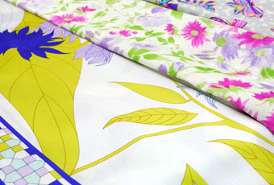

SHOP INFORMATIONタナカ洋装店
品揃え県下最大の服地専門店

「倉敷えびす通商店街」に古くから佇む「タナカ洋装店」は中級・高級の婦人服地を安く提供している服地専門店。イタリアやスイス、フランスなど、主にヨーロッパの服地を多く扱っています。冬はカシミアやシルク、ウールなどがメイン、夏は綿や麻などを多く取り揃え、豊富な品揃えは岡山県下最大。この店オリジナルの服地もあります。店内は、種類別にディスプレイされているのでとても見やすく、欲しいものがスムーズに探し出せます。
豊富な服地＆オーダーメイド
最近特に人気が出てきた服地はニット。暖まるウール素材から、肌触りの良い綿ニットや麻ニットまで、バリエーションは中四国最大級です。日本ではここにしかないものも。こちらのお店では服地販売の他に、オーダーメイドも行っています。選び抜かれた高品質の服地と、長年の高い技術で、お客さんのニーズに対応した一着を仕立ててくれます。既製品とは違い、デザインやサイズを妥協せずに作れるので、最高の着心地に出来上がります。
豊富な品揃え・親切・丁寧がモットー
お店は倉敷駅から徒歩5分、ショップや飲食店が軒を並べるアーケード街の一角にあります。「大原美術館」や「倉敷アイビースクエア」へも徒歩5分という距離なので、ショッピングと同時に観光も楽しめる抜群の立地です。昭和31年創業以来「お客様にご満足いただけるための品揃え」をモットーに営んできた「タナカ洋装店」。地元の方はもちろん、市外や県外からお客さんが訪れるほどの人気。「できるだけのサービスをしたい」と、服地を買いに訪れた方には、服のデザインや縫い方のアドバイスを行っているそうです。洋裁経験者はもちろん、初心者や興味のある方も、ぜひ一度立ち寄ってみてください。
Googleマップでみる
一覧に戻る